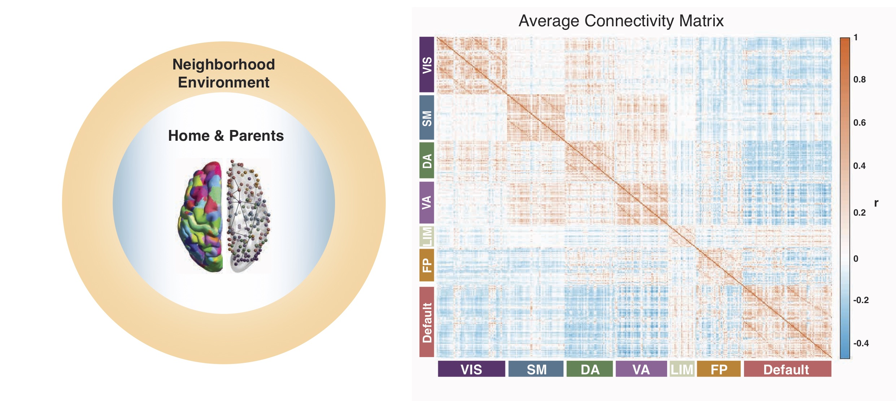

Tooley, U.A. Bassett, D.S. & Mackey, A.P. (2022). Functional brain network community structure in childhood: Unfinished territories and fuzzy boundaries. Neuroimage 118843. pdf
Mahadevan, A.S., Tooley, U.A. , Bertolero, M.A., Mackey A.P., & Bassett, D.S. (2021). Evaluating the sensitivity of functional connectivity measures to motion artifact in resting-state fMRI data. Neuroimage 118408. pdf
McDermott, C.L., Hilton, K., Park, A.T., Tooley, U.A. , Boroshok, A.L., Mupparapu, M., Scott, A.M., Bumann, E.E., Mackey, A.P. (2021). Early life stress is associated with earlier emergence of permanent molars. Proceedings of the National Academy of Sciences. 118(24) e2105304118. pdf
Cieslak, M., Cook, P.A., He, X., Yeh, F.H., Dhollander, T., Adebimpe, A., ... Tooley, U.A. , . & Satterthwaite, T.D. (2021). QSIPrep: A robust and unified workflow for preprocessing and reconstructing diffusion MRI. Nature Methods. 18, 775-778. link
Tooley, U.A., Bassett, D.S., & Mackey, A.P. (2021). Environmental influences on the pace of brain development. Nature Reviews Neuroscience, 22, 372–384. pdf
Park, A. T., Tooley, U.A. , Leonard, J. A., Boroshok, A. L., McDermott, C.L., Tisdall, M.D., & Mackey, A.P. (2021). Early childhood stress is associated with blunted development of ventral tegmental area connectivity. Developmental Cognitive Neuroscience, 47:100909. pdf
Tooley, U.A., Mackey, A. P., Ciric, R., Ruparel, K., Moore, T. M., Gur, R. C., Gur, R. E., Satterthwaite, T. D., Bassett, D. S. (2020). Associations between neighborhood SES and functional brain network development. Cerebral Cortex, 30(1), 1-19. pdf
Tooley, U., Makhoul, Z., & Fisher, P.A. (2016). Nutritional status of foster children: implications for cognitive and behavioral development. Children and Youth Services Review, 70, 369-374. pdf
Edgin, J.O., Tooley, U., Demara, B., Nyhuis, C., Anand, P., & Spano, G. (2015). Sleep disturbance and expressive language development in preschool-age children. Child Development, 86(6), 1984-1998. pdf
Submitted or under review
Boroshok A.L., Park A.T., Fotiadis, P., Velasquez G.H., Tooley, U.A. ,Simon K.R., Forde J.C.P., Tisdall M.D., Cooper E.A., & Mackey A.P. Individual differences in frontoparietal plasticity in humans. Under review. bioRxiv:preprint
Tooley, U.A. , Park, A. T., Leonard, J. A., Boroshok, A. L., McDermott, C.L., Tisdall, M.D., & Mackey, A.P. The age of reason: Functional brain network development from early to middle childhood. In prep.
Selected publications
Environmental influences on the pace of brain development. Nature Reviews Neuroscience (2021). Childhood socioeconomic status (SES), a measure of the availability of material and social resources, is one of the strongest predictors of lifelong well-being. Here, we suggest that experiences associated with childhood SES affect not only the outcome but also pace of brain development, with implications for neural plasticity. We argue that higher childhood SES is associated with protracted structural brain development and a prolonged trajectory of functional network segregation, ultimately leading to more efficient cortical networks in adulthood. We hypothesize that greater exposure to chronic stress accelerates brain maturation, whereas greater access to novel positive experiences decelerates maturation. We also discuss the impact of variation in the pace of brain development on plasticity and learning.

Associations between neighborhood SES and functional brain network development. Cerebral Cortex (2020).
It is intuitively obvious to anyone who has watched a child turn into a teenager that our brains undergo vast changes as we grow up. But how might these changes differ for a child living in Brooklyn as compared to a child living in Detroit? Our recent work finds that intrinsic brain networks become more segregated, or clustered into subgroups, as children get older, and that the socioeconomic status (SES) of the neighborhood they live in affects this process. We found that youth living in high-SES neighborhoods show stronger age-related changes in brain network segregation than youth living in low-SES neighborhoods.
While children in high-SES neighborhoods start out with lower levels of brain network segregation, by age 22, they show higher levels of segregation than youth in low-SES neighborhoods, a pattern that is suggestive of faster brain development in the youth in high-SES neighborhoods. These effects were strongest in areas of the brain important for judgment, motivation, and both sensory and motor processing. Our findings shed light on the relationships between intrinsic brain networks and age, and on how the local environment might shape these relationships, underscoring the importance of the neighborhood during development.
PDFs are provided to ensure timely dissemination of academic work. They can be downloaded for noncommercial, information purposes only, and may not be reposted without permission from the respective copyright holders.